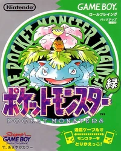

| Geração | Jogo | Plataforma | Lançamento |
|---|---|---|---|
| Primeira Geração |
Pocket Monsters Red e Green 
|
Game Boy | 27 de Fevereiro de 1996 Japão |
|  | Nintendo 3DS Virtual Console |
27 de Fevereiro de 2016 Japão, Hong Kong & Taiwan | |
Pocket Monsters Blue 
|
Game Boy | 10 de Outubro de 1996 Japão |
|
| Nintendo 3DS Virtual Console |
27 de Fevereiro de 2016 Japão, Hong Kong & Taiwan |
||
|
Pokémon Red e Blue |
Game Boy | 28 de Setembro de 1998 América do Norte |
|
| 23 de Outubro de 1998 Austrália |
|||
| 5 de Outubro de 1999 Europa |
|||
| Nintendo 3DS Virtual Console |
27 de Fevereiro de 2016 Global |
||
|
Pokémon Yellow |
Game Boy | 12 de Setembro de 1998 Japão |
|
| 27 de Fevereiro de 2016 Global |
|||
| 3 de Setembro de 1999 Austrália |
|||
| 16 de Junho de 2000 Europa |
|||
| Nintendo 3DS Virtual Console |
27 de Fevereiro de 2016 Global |